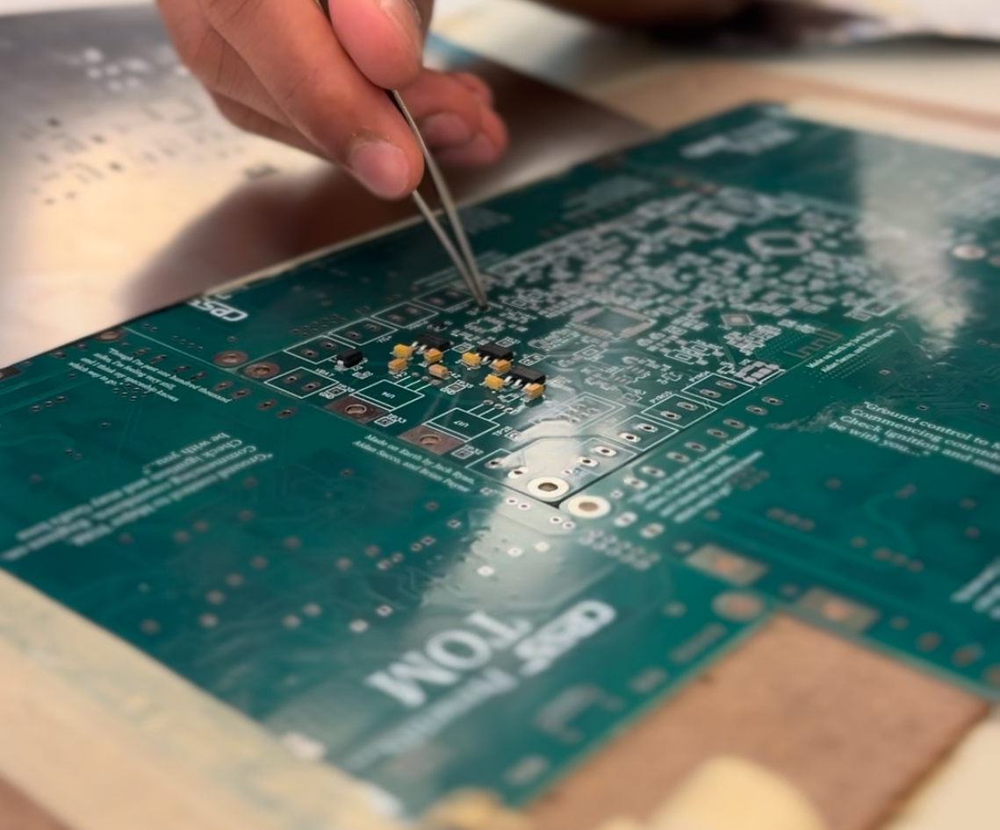
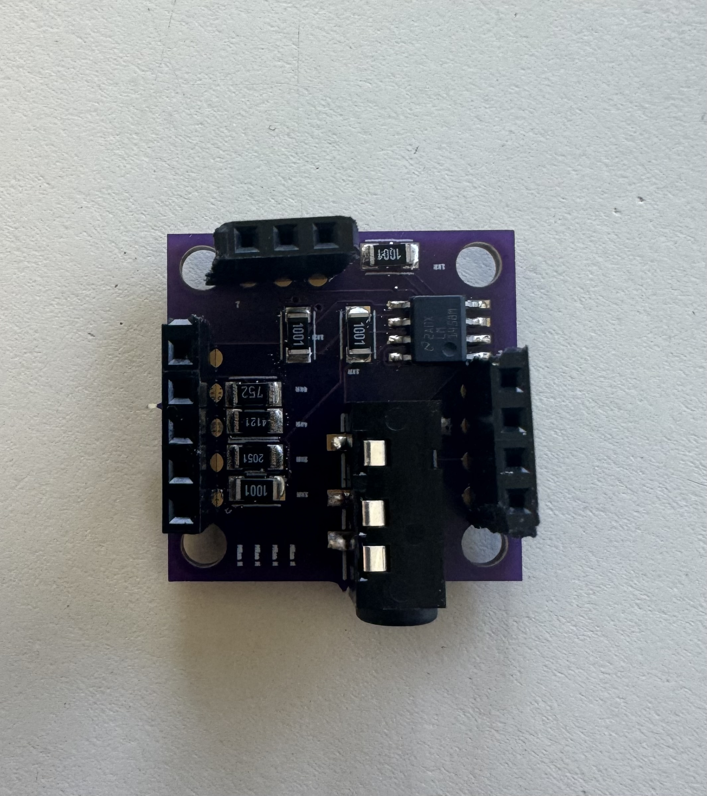
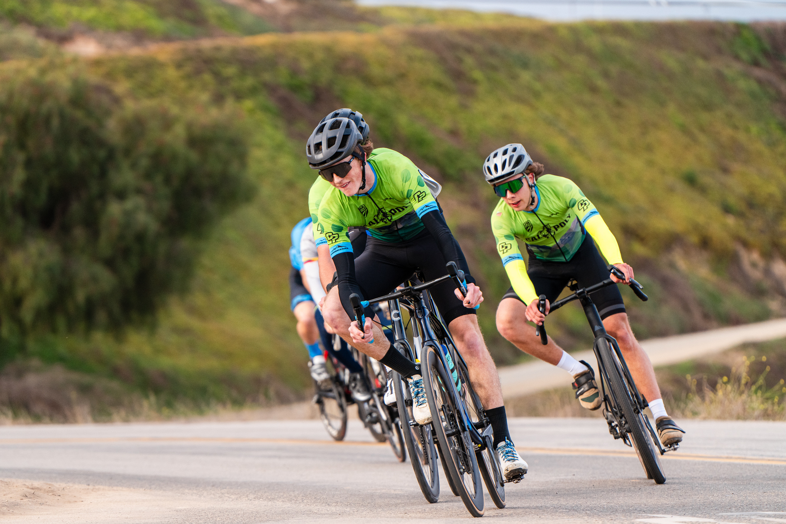
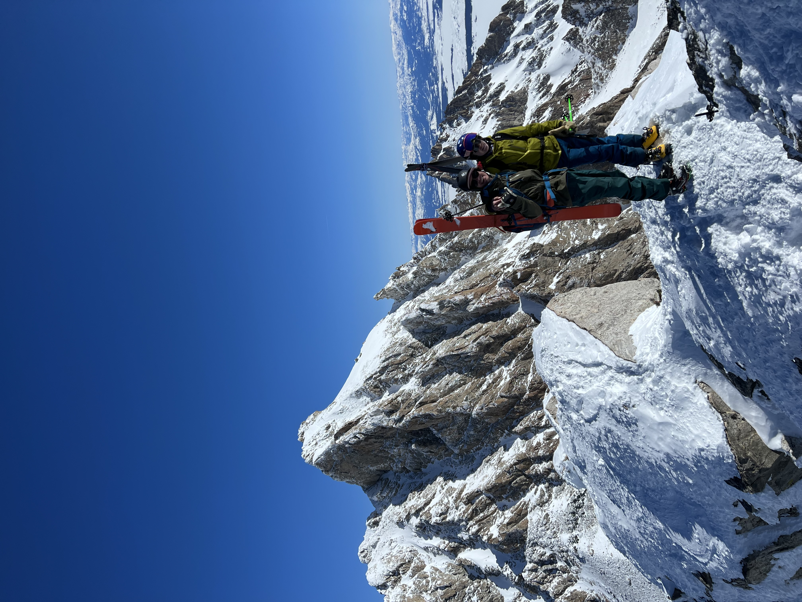

About Me
I am an Electrical Engineering student at Cal Poly SLO. I am interested in Aerospace, Nuclear energy, and Sustainable transportation. I possess a unique blend of outdoor leadership and critical problem-solving skills honed through extensive backcountry skiing and dedicated volunteer service with Teton County Search and Rescue. I also compete in Mountain and Road cycling at the collegiate level as a valued member of the Cal Poly Club Cycling Team, demonstrating my commitment, discipline, and time management skills.
Skills
Hard Skills:
- PCB Design (EagleCAD, Altium, LTSpice)
- PCB Assembly (Soldering, De-soldering)
- PCB Testing and Troubleshooting (Oscilloscopes, Multimeters, Waveform Generators, Power Supplies)
- CAD (Fusion 360, Tinkercad)
- 3D Printing
- Programming (Python, C/C++, Java, Arduino)
- Data Analysis (Excel, Python)
- Web Development (HTML, CSS, JavaScript)
- Technical Writing
- Drone Piloting and Operations (DJI, FPV)
- Technical Problem Solving
Soft Skills:
- Leadership
- Teamwork
- Public Speaking
- Communication
- Time Management
- Adaptability
- Critical Thinking
- Problem Solving
- Attention to Detail
Experience
-
Cal Poly Space Systems Avionics (Sept 2024 - Present)
I supported hardware development to meet requirements for new projects. I designed, assembled, soldered, and tested telemetry hardware for competition rockets.
Cal Poly Space Systems telemetry PCB assembly
-
Factory Information Technology Intern (Jun 2021 - Aug 2024)
I resolved over 100 technical issues on client sites through effective collaboration with in-office staff. I also took ownership of recycling more than 1000 laptops and workstations, where I prioritized client security by ensuring the complete erasure of data from storage hardware. My work with the finance and accounting department involved establishing secure storage solutions for their sensitive information. Furthermore, I managed the detailed tracking of hardware assets throughout the recycling process, maintaining thorough documentation. My commitment extended to implementing environmentally responsible recycling practices aimed at minimizing the impact of disposed materials.
-
Jackson Hole Composite Mountain Biking Captain (Jun 2023 - Oct 2023)
As a six-year member of the Jackson Hole Composite mountain bike team, I actively encouraged teammates to challenge themselves by competing in higher categories, a strategic approach that contributed to increased team points. I played a vital role in cultivating a culture of success among all team members, fostering an environment that directly contributed to the team achieving a podium finish as a Division 1 Idaho mountain bike team. Furthermore, I served as a positive role model for younger members, consistently encouraging high performance and exemplary sportsmanship both on and off the bike. My long-term commitment and influence were integral to the team's achievements and positive atmosphere within Jackson Hole Composite.
-
Teton County Search and Rescue Venture Crew (May 2023 - Jun 2024)
I led avalanche and other critical backcountry training sessions, taking initiative to ensure over 50 members not only understood but actively adhered to best practices and crucial safety protocols, fostering a culture of preparedness and responsibility within the team. I actively participated in organization-wide meetings, demonstrating a commitment to the broader mission and proactively gaining valuable insights into the dynamics and strategies of high-performing teams and effective organizational structures.
Projects
-
Autonomous FPV Wing
Developing FPV Wing UAV using Ardupilot in part to support a Cal Poly Space Systems Booster Recovery Project.
-
Espresso Scale
Developing Arduino Nano based espresso scale, with the goal of undercutting higher end scales.
-
Digital to Audio Converter PCB
Designed, Assembled, and tested 4 bit Digital to Audio Converter. I designed the PCB using LTSpice and EagleCAD. I hand soldered all surface mount and through hole components. I tested the DAC using modern Oscilloscopes, Waveform Generators, Multimeters, and Power Supplies.

Oscilloscope Screenshot showing functional DAC output.
-
Moonguessr
I developed and shipped a game inspired by Geoguessr where the player is given an image from the lunar surface and asked to find the location on the lunar map given by NASA's Lunar Reconaissence Orbiter.
-
Morse Code Trainer
As a part of my Introduction to Electrical Engineering lab my group built a Morse Code Trainer using an Arduino Mega, that translates button presses into text.

Athletics
-
Cal Poly Cycling (Sep 2024 - Present)
I compete in mountain and road bike races all year round. I have previously competed in Mountain Bike National Championships and other USA Cycling sanctioned events.

-
Ski Mountaineering (Dec 2020 - Present)
I have skied highly technical ski descents in Grand Teton National Park, such as the Middle Teton, South Teton, Nez Perce, and many more.
Atop the Middle Teton before descending down the east facing glacier.
Contact
Email: mbhuseby@calpoly.edu
LinkedIn: Miles Huseby